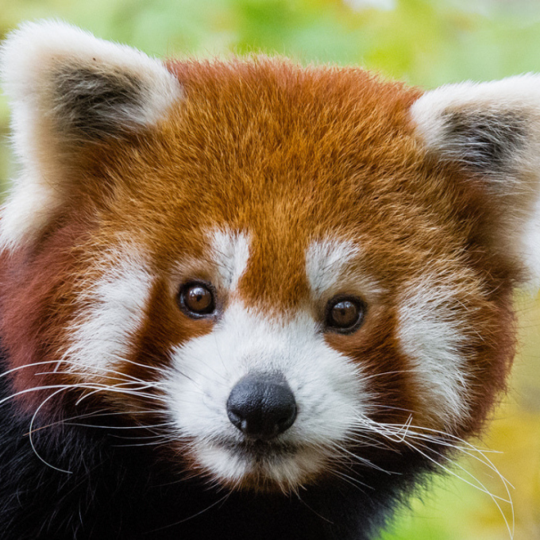

Red Pandas
You head towards the back of the zoo to try and catch a peak at one of the cutest animals to be found. Dispite their name,the red panda doesn't look much likt the black-and-white giant that shares its name. As you scan your eyes through the small enclosure you wonder if perhaps the habitat is under construction as there is nothing visible. After about 5 minutes you're able to spot a tuft of red fur from behind one of the bushes. Disapointed, you decide that you will just have to visit a more active animal, or something that would be difficult not to see.
Before you leave you notice a sign that tells you more about red pandas. Not only does it provide a picture of the majestic creature, but it says the following:
Habitat and Behavior
The red panda shares the giant panda's rainy, high-altitude forest habitat, but has a wider range. Red pandas live in the mountains of Nepal and northern Myanmar (Burma), as well as in central China.
These animals spend most of their lives in trees and even sleep aloft. When foraging, they are most active at night as well as in the gloaming hours of dusk and dawn.
Red pandas have a taste for bamboo but, unlike their larger relatives, they eat many other foods as well—fruit, acorns, roots, and eggs. Like giant pandas, they have an extended wrist bone that functions almost like a thumb and greatly aids their grip.
Click here to learn more about red pandas.